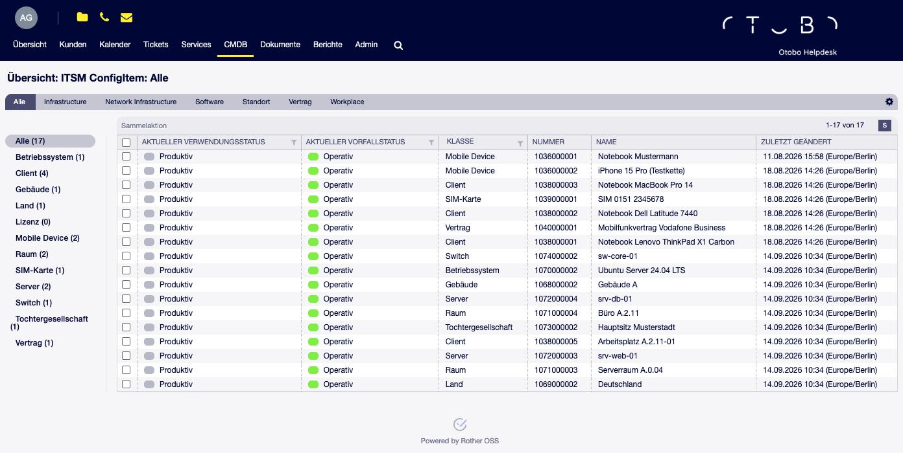
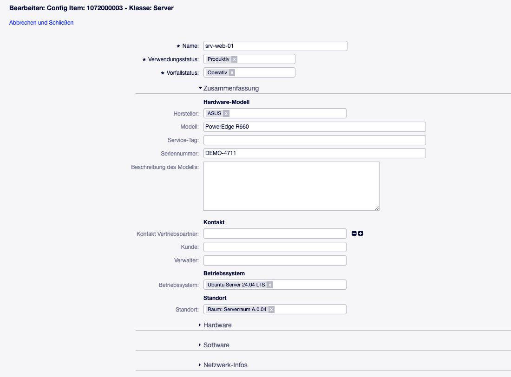
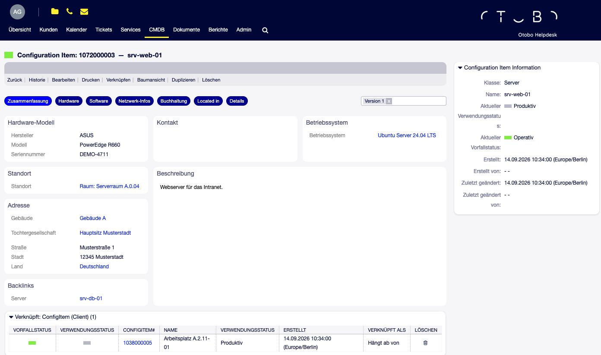
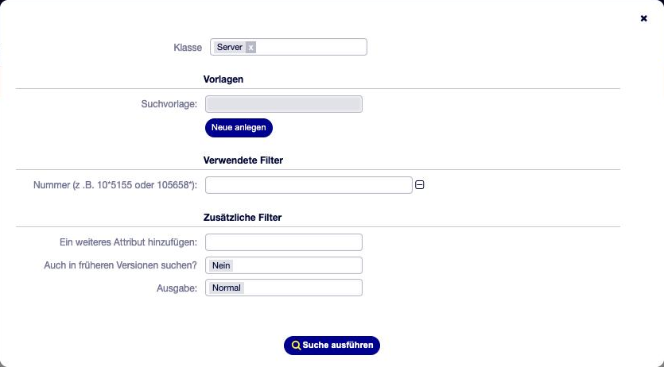

Arbeiten mit Config Items (Agenten)¶
Dieses Kapitel beschreibt die CMDB-Masken der Agentenoberfläche: Übersicht, Anlegen und Bearbeiten, Detailansicht, Historie, Druck, Löschen, Baumansicht, Sammelaktion und Suche — jeweils mit den Einstellungen, die das Verhalten steuern. Erreichbar sind die Masken über den Hauptmenüpunkt CMDB.
Voraussetzung für alle Masken sind Rechte in der Gruppe itsm-configitem und
in der Berechtigungsgruppe der jeweiligen Klasse (siehe Berechtigungen).
Übersicht¶
CMDB → Übersicht zeigt die Config Items in zwei Ebenen:
Kategorien als Reiter oben — Einträge der General-Catalog-Klasse
ITSM::ConfigItem::Class::Category(bei der Installation:All).Klassen als Filter links, jeweils mit Anzahl. Umfasst eine Kategorie mehr als eine Klasse, gibt es zusätzlich den Filter Alle.

Abb. 11 CMDB-Übersicht mit Kategorie-Reitern und Klassenfiltern¶
Welche Kategorie beim Aufruf aktiv ist, legt
ITSMConfigItem::Frontend::AgentITSMConfigItem###DefaultCategory fest
(Standard All).
Eine Klasse erscheint nur,
wenn sie mindestens einer Kategorie zugeordnet ist — eine Klasse ohne Kategorie taucht in der Übersicht gar nicht auf, und
wenn der Agent die Klasse sehen darf (Berechtigungsgruppe der Klasse).
Bemerkung
Die Übersicht listet nur Config Items in vorproduktiven und produktiven Verwendungsstatus (Funktionalität preproductive oder productive, siehe Verwendungs- und Vorfallstatus). Config Items außer Dienst oder inaktiv (postproductive) sind nur über die Suche zu finden.
Die Liste lädt höchstens 1.000 Config Items je Filter und zeigt ab Werk
10 Einträge pro Seite. Die persönliche Einstellung dafür
(PreferencesGroups###ConfigItemOverviewSmallPageShown, Auswahl 10 bis 35) ist
ausgeliefert, aber mit Active: 0 für Agenten gesperrt; Administratoren können
sie für einen Agenten setzen oder die Gruppe aktivieren.
Spalten¶
Welche Spalten verfügbar und vorausgewählt sind, steuern diese Einstellungen.
Die Werte bedeuten jeweils 0 = nicht verfügbar, 1 = verfügbar,
2 = standardmäßig angezeigt.
ITSMConfigItem::Frontend::AgentITSMConfigItem###DefaultColumnsSpalten für alle Klassen. Ab Werk angezeigt: Klasse, Nummer, Name, aktueller Verwendungsstatus, aktueller Vorfallstatus, zuletzt geändert. Verfügbar: Typ des Verwendungs- und des Vorfallstatus, Erstellt. Dynamische Felder werden als
DynamicField_<Feldname>eingetragen.ITSMConfigItem::Frontend::AgentITSMConfigItem###ClassColumnsDefault,…###ClassColumnsAvailable,…###ClassColumnsDisabledAbweichende Spalten je Klasse; Schlüssel ist der Klassenname, Wert die Liste der Spalten. Ab Werk ausgeschaltet. Klassenspezifische Felder gehören typischerweise hierher, weil sie in anderen Klassen leer wären.
Die Spaltenauswahl eines Agenten wird je Filter gespeichert. Die Spalte Nummer ist immer enthalten. Dieselbe Spaltenkonfiguration gilt für die Ergebnisliste der Suche.
Sortieren lässt sich nach Alter, Nummer, Name, Erstellt, zuletzt geändert sowie den Verwendungs- und Vorfallstatus. Spaltenfilter gibt es für Klasse, die Status und für dynamische Felder, deren Feldtyp das Filtern unterstützt (siehe Referenzfelder auf Config Items). Die Farbe des Verwendungsstatus stammt aus seiner Eigenschaft Farbe im General Catalog.
Aktionen in der Liste¶
Beim Überfahren einer Zeile erscheinen Schnellaktionen (Detailansicht,
Historie, Duplizieren), registriert unter
ITSMConfigItem::Frontend::PreMenuModule###….
Die Auswahlkästchen für die Sammelaktion erscheinen,
wenn ITSMConfigItem::Frontend::BulkFeature aktiv ist (Standard). Ist
zusätzlich ITSMConfigItem::Frontend::BulkFeatureGroup gesetzt, sehen sie nur
Agenten mit rw in einer der dort genannten Gruppen.
Config Item anlegen¶
CMDB → Neu listet alle Klassen, in denen der Agent Config Items anlegen darf (rw auf die Berechtigungsgruppe der Klasse), mit einem Suchfeld zum Eingrenzen. Ein Klick auf die Klasse öffnet die Bearbeiten-Maske.
Bearbeiten-Maske¶
Anlegen, Bearbeiten und Duplizieren verwenden dieselbe Maske.

Abb. 12 Bearbeiten-Maske mit festen Feldern und Abschnitten der Klassendefinition¶
Feste Felder — sie gehören zu jeder Version und sind keine dynamischen Felder:
- Name
Pflichtfeld. Ist bei der Klasse ein Namensmodul hinterlegt, wird der Name automatisch erzeugt und das Feld nicht angeboten.
- Versionsbezeichnung
Nur sichtbar, wenn die Klasse kein Versionsmodul hat; dann wird die Bezeichnung von Hand vergeben.
- Verwendungsstatus, Vorfallstatus
Pflichtfelder. Beim Vorfallstatus stehen nur Status der Typen operational und incident zur Wahl; warning vergibt OTOBO selbst über die Vorfallvererbung (siehe Verknüpfungen und Vorfallstatus-Vererbung).
- Beschreibung
Rich-Text-Feld — nur vorhanden, wenn die Klassendefinition einen Abschnitt vom Typ
Descriptionhat. Größe überITSMConfigItem::Frontend::AgentITSMConfigItemEdit###RichTextWidthund…###RichTextHeight.- Anhänge
Dateien hängen am Config Item, nicht an einer Version. In die Beschreibung eingefügte Bilder werden dagegen je Version gespeichert.
Dynamische Felder — die Maske wird aus der Klassendefinition aufgebaut:
Es gilt immer die neueste Definition der Klasse, auch beim Bearbeiten eines Config Items, das noch mit einer älteren Definition gespeichert wurde.
Abschnitte vom Typ
DynamicFieldserscheinen untereinander; bei mehreren Reitern in aufklappbaren Blöcken je Reiter.Layoutund Rasterpositionen der Detailansicht spielen keine Rolle.Reiter mit
InterfacesohneAgentoder mitGroups, in denen der Agent nicht ist, fehlen — ihre Felder werden dann auch nicht gespeichert.Ein Feld, das auf mehreren Reitern vorkommt, erscheint nur einmal.
Feldabhängigkeiten und ACLs werden beim Ausfüllen live angewendet (siehe ACLs für Config Items).
Bemerkung
Die Einstellung ITSMConfigItem::Frontend::AgentITSMConfigItemEdit###DynamicField
ist in dieser Maske ohne Wirkung. Welche Felder erscheinen, bestimmt allein
die Klassendefinition.
Namensregeln¶
UniqueCIName::EnableUniquenessCheckPrüft beim Speichern, ob der Name schon vergeben ist. Ab Werk aus.
UniqueCIName::UniquenessCheckScopeGeltungsbereich der Prüfung:
global(über alle Klassen) oderclass(innerhalb der Klasse).ITSMConfigItem::CINameRegexRegulärer Ausdruck je Klasse, dem der Name entsprechen soll, mit eigener Fehlermeldung. Schlüssel
<Klassenname>::CINameRegexund<Klassenname>::CINameRegexErrorMessage. Ab Werk ausgeschaltet.
Bestehende Namensdoppel findet der Konsolenbefehl
Admin::ITSM::ConfigItem::ListDuplicates (siehe Konsolenbefehle).
Neue Version oder Überschreiben?¶
Ob das Speichern eine neue Version erzeugt, hängt von den Versionsauslösern der Klasse ab — siehe Wann entsteht eine neue Version eines Config Items?.
Duplizieren¶
Duplizieren (in der Detailansicht und als Schnellaktion der Liste) öffnet die Maske mit den Werten der gewählten Version als Vorlage für ein neues Config Item. Die Nummer wird neu vergeben. Ist die Namensprüfung aktiv, muss der Name vor dem Speichern geändert werden.
Detailansicht¶

Abb. 13 Detailansicht mit Reitern, Versionsauswahl und Seitenleiste¶
- Reiter
Aus
Pagesder Klassendefinition, gefiltert nachInterfacesundGroups. Hat die Klasse nur einen sichtbaren Reiter, erscheint statt der Reiterleiste eine Überschrift.- Versionsauswahl
Eine Auswahlliste mit allen Versionen (Version <Versionsbezeichnung>). Jede Version wird mit ihren eigenen Werten und der zu ihr gehörenden Definition angezeigt.
- Seitenleiste Config-Item-Informationen
Klasse, Name, aktueller Verwendungs- und Vorfallstatus, erstellt/geändert mit Benutzer sowie die Anhänge zum Herunterladen.
- Verknüpfte Objekte
Tickets, Services und andere Objekte, die über Verknüpfen mit dem Config Item verbunden sind. Ob die Tabelle in der Seitenleiste oder unter dem Inhalt steht, entscheidet
LinkObject::ViewMode(Simple/Complex).
Bemerkung
Die Einstellung ITSMConfigItem::Frontend::AgentITSMConfigItemZoom###DynamicField
ist ohne Wirkung; die angezeigten Felder bestimmt die Klassendefinition.
Historie¶
Die Historie listet alle Änderungen: Anlage, neue Versionen, Status- und Namensänderungen, geänderte Feldwerte (mit altem und neuem Wert), Verknüpfungen, Anhänge, Definitionswechsel und gelöschte Versionen.
ITSMConfigItem::Frontend::HistoryOrderReihenfolge:
normal(älteste zuerst, Standard in 11.0) oderreverse(neueste zuerst).
OTOBO 11.1
Der Standard ist in 11.1 reverse — neueste Einträge oben. Ein bewusst
gesetzter Wert bleibt beim Update erhalten.
Drucken¶
Drucken erzeugt ein PDF der angezeigten Version: allgemeine Angaben,
Versionsdaten mit den Feldern der sichtbaren Reiter und der Beschreibung,
Anhangsliste, verknüpfte Config Items und verknüpfte Objekte. Dateiname
configitem_<Nummer>_<Datum>.pdf.
ITSMConfigItem::Frontend::AgentITSMConfigItemPrint###DynamicField ist ohne
Wirkung; der Inhalt folgt der Klassendefinition.
Löschen¶
Löschen darf, wer
rw in der Gruppe
itsm-configitemhat (Modulregistrierung) undrw in der Berechtigungsgruppe der Klasse (
ITSMConfigItem::Frontend::AgentITSMConfigItemDelete###Permission).
Warnung
Löschen ist endgültig: Alle Versionen, Feldwerte, Anhänge und Verknüpfungen werden entfernt — einschließlich der Historie. Wo die CMDB revisionssicher sein muss, sollten Config Items stattdessen in einen postproductive Verwendungsstatus (etwa Außer Dienst) gesetzt und das Recht zum Löschen nicht vergeben werden.
Alte Versionen lassen sich gezielt über die Konsole bereinigen, siehe Konsolenbefehle.
Baumansicht¶
Die Baumansicht zeigt die Beziehungen eines Config Items als Graph — in beide Richtungen und über mehrere Stufen.

Abb. 14 Baumansicht der Beziehungen eines Config Items¶
CMDBTreeView::DefaultDepthAnzahl Stufen beim Öffnen (Standard 3). In der Ansicht selbst lässt sich die Tiefe zwischen 1 und 10 und der Zoom zwischen 20 und 200 % ändern.
CMDBTreeView::ShowLinkLabelsLinktypen an den Verbindungslinien anzeigen (Standard
Yes).
Dargestellt werden nur Beziehungen zwischen Config Items — sowohl von Hand verknüpfte als auch solche aus Referenzfeldern mit hinterlegtem Linktyp (siehe Verknüpfungen und Vorfallstatus-Vererbung). Tickets und Services erscheinen nicht.
Zum Öffnen braucht der Agent rw in der Gruppe itsm-configitem.
Sammelaktion¶
Mit den Auswahlkästchen der Übersicht oder Suchergebnisse lassen sich mehrere
Config Items gleichzeitig ändern. Jedes Config Item wird einzeln auf rw geprüft
(ITSMConfigItem::Frontend::AgentITSMConfigItemBulk###Permission).
Änderbar sind:
- Verwendungsstatus, Vorfallstatus
Wenn
ITSMConfigItem::Frontend::AgentITSMConfigItemBulk###DeplStatebzw.…###InciStateaktiv ist (Standard).- Verknüpfen
Miteinander verknüpfen verbindet alle ausgewählten Config Items untereinander (nur mit ungerichteten Linktypen). Mit anderem verknüpfen verbindet sie mit einem Config Item, das über seine Nummer angegeben wird — mit beliebigem Linktyp und Richtung.
- Dynamische Felder
Nur wenn alle ausgewählten Config Items derselben Klasse angehören, und nur Felder, die in
ITSMConfigItem::Frontend::AgentITSMConfigItemBulk###DynamicFieldfreigeschaltet sind.
Jede Änderung läuft wie ein normales Speichern — die Versionsauslöser der Klasse gelten auch hier.
Bemerkung
Die Sammelaktion berücksichtigt Groups der Klassendefinition nicht: Felder
eingeschränkter Reiter sind hier nicht ausgeblendet.
Suche¶
CMDB → Suche öffnet den Suchdialog.

Abb. 15 Suchdialog für Config Items¶
Zuerst wird eine Klasse gewählt — ohne Klasse ist keine Suche möglich. Anschließend stehen zur Verfügung:
Nummer und Name (
*als Platzhalter),Verwendungsstatus und Vorfallstatus (Mehrfachauswahl),
dynamische Felder der Klasse.
Dynamische Felder erscheinen nur, wenn sie
in
ITSMConfigItem::Frontend::AgentITSMConfigItemSearch###DynamicFieldeingetragen sind (1= verfügbar,2= verfügbar und standardmäßig eingeblendet) — ab Werk ist die Liste leer, undauf einem Reiter der Klassendefinition stehen, den der Agent sieht.
Die inneren Felder eines Set-Feldes werden als <Set>::<Feld> angeboten.
Durchsucht werden die Werte der aktuellen Version.
Bemerkung
Bis einschließlich ITSMConfigurationManagement 11.0.16 bietet der Dialog zusätzlich Auch in früheren Versionen suchen? an. Rother OSS hat diese Auswahl danach aus der 11.0-Linie entfernt; mit einem späteren Paket-Update entfällt sie.
Tipp
Nach dem Anlegen neuer Felder die Sucheinstellung nicht vergessen — der häufigste Grund für „das Feld ist in der Suche nicht da“.
- Vorlagen
Suchen lassen sich als Vorlage speichern. Vorlagen gelten je Agent und je Klasse. Die letzte Suche wird automatisch als
last-searchgemerkt.- Ausgabe
Bildschirm, Druck (PDF), CSV oder Excel.
ITSMConfigItem::Frontend::AgentITSMConfigItemSearch###SearchCSVDataFeste Spalten für CSV und Excel (Klasse, Vorfallstatus, Name, Nummer, Verwendungsstatus, Version, Erstelldatum).
ITSMConfigItem::Frontend::AgentITSMConfigItemSearch###SearchCSVDynamicFieldZusätzliche dynamische Felder für CSV und Excel.
Das PDF hat feste Spalten. Jede Ergebniszeile wird auf Berechtigung geprüft.
- Weitere Einstellungen
…###SearchLimit(höchstens 10.000 Treffer),…###SortBy::Defaultund…###Order::Default(Sortierung),…###Defaults###…(vorausgefüllte Suchfelder).
Bemerkung
ITSMConfigItem::Frontend::AgentITSMConfigItemSearch###SearchPageShown
und …###ExtendedSearchCondition sind in 11.0 ohne Wirkung, ebenso
ITSMConfigItem::Frontend::AgentITSMConfigItem###SearchLimit der Übersicht.
Config Items und Tickets¶
Verknüpfte Objekte im Ticket¶
Config Items erscheinen im Ticket in der Tabelle der verknüpften Objekte. Einen eigenen Widget-Typ bringt die CMDB nicht mit. Mögliche Linktypen zwischen Ticket und Config Item sind Alternative zu, Hängt ab von und Relevant für.
LinkObject::ITSMConfigItem::ShowColumnsZusätzliche Signalspalten in der Tabelle: aktueller Vorfallstatus (
CurInciSignal) und Verwendungsstatus (CurDeplSignal).LinkObject::ITSMConfigItem::ShowColumnsByClassDasselbe je Klasse (ab Werk aus).
In 11.0 wirken in beiden Einstellungen nur die zwei Signalspalten; Nummer, Name, Verwendungsstatus und Erstelldatum werden immer angezeigt.
Wie ein Referenzfeld im Ticket automatisch eine Verknüpfung anlegt und wie offene Tickets den Vorfallstatus eines Config Items setzen können, beschreibt Verknüpfungen und Vorfallstatus-Vererbung.
Kunden-Informationszentrum¶
Zwei Dashboard-Widgets zeigen die einem Kunden zugeordneten Config Items:
AgentCustomerInformationCenter::Backend###0060-CIC-ITSMConfigItemCustomerCompanyIm Kundenfirmen-Informationszentrum.
AgentCustomerUserInformationCenter::Backend###0060-CUIC-ITSMConfigItemCustomerUserIm Kundenbenutzer-Informationszentrum.
Die Zuordnung läuft über ein Referenzfeld am Config Item, dessen Name im
Schlüssel ConfigItemKey steht: Das Widget zeigt die Config Items, bei denen
dieses Feld die Kundennummer bzw. den Kundenbenutzer enthält. ShownClasses
schränkt zusätzlich auf Klassen ein.
Warnung
Beim Firmen-Widget ist ConfigItemKey ab Werk leer — das Widget bleibt
dann leer. Beim Benutzer-Widget ist Contact-User vorbelegt; das passt nur,
wenn ein Feld dieses Namens existiert (wie in den mitgelieferten Klassen).
Prozessmanagement¶
Zwei Übergangsaktionen legen Config Items aus Prozessen heraus an oder ändern sie:
ConfigItemAddPflicht:
Class,DeplState,InciState;Name(sofern die Klasse kein Namensmodul hat). Optional:Number,VersionString, Feldwerte alsDynamicField_<Name>,LinkAs(Verknüpfung mit dem Prozessticket, Wert ist der Linkname wieDepends on,Relevant tooderAlternative to),StoreConfigItemIDDynamicField(Name des Ticketfeldes, das die ID des neuen Config Items aufnimmt),UserID.ConfigItemUpdateÄndert ein bestehendes Config Item. Es wird über
ConfigItemIDoderNumberbestimmt (eines von beiden ist Pflicht). Optional:Name(nur ohne Namensmodul),VersionString(nur ohne Versionsmodul und wenn eine Version entsteht),DeplState,InciState,DynamicField_<Name>,LinkAs,UserID. Status werden als Namen angegeben.
Statistiken¶
Das Statistikmodul kennt das Objekt ITSMConfigItem
(Stats::DynamicObjectRegistration###ITSMConfigItem) für eigene Auswertungen
über Config Items.
Benachrichtigungen¶
Ticket-Benachrichtigungen und der Generic Agent reagieren nicht auf Ereignisse an Config Items. Auf Änderungen an Config Items reagieren können nur Webservice-Invoker (siehe Webservice (Generic Interface)) sowie die zeitgesteuerte Ticketerstellung und die Lizenzzählung (siehe Verknüpfungen und Vorfallstatus-Vererbung).